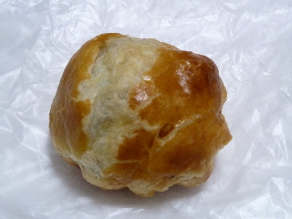
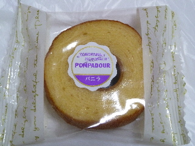

ポンパドウルのマロンパイ
2011/09/18
米子の天満屋にあるパン屋さんでマロンパイを買いました。

バターが効いてて美味しいパイでした。
パイにはしっかりバターがないと物足りないですよね。大きさは小さいパイですが、満足できました。

最近お高いバームクーヘンを見るんですが、ここのはお手頃価格で買いやすかったです。
バームクーヘンはこれくらいがいいなって思いました。
米子市の天満屋内にあるパン屋さんです。
2011/09/18
米子の天満屋にあるパン屋さんでマロンパイを買いました。

バターが効いてて美味しいパイでした。
パイにはしっかりバターがないと物足りないですよね。大きさは小さいパイですが、満足できました。

最近お高いバームクーヘンを見るんですが、ここのはお手頃価格で買いやすかったです。
バームクーヘンはこれくらいがいいなって思いました。